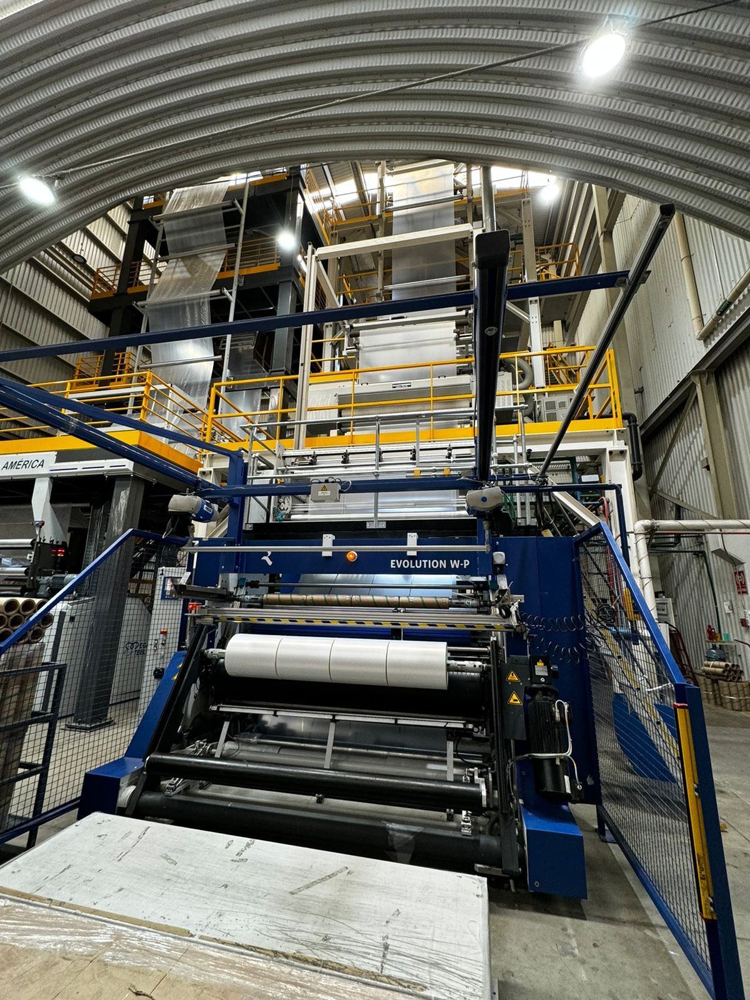
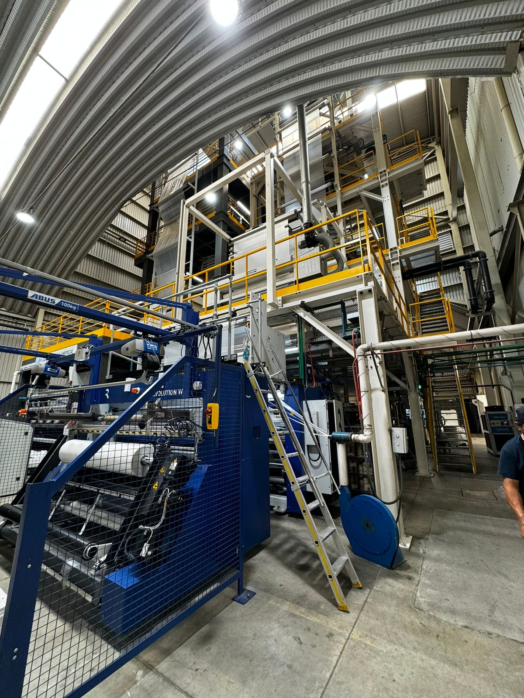
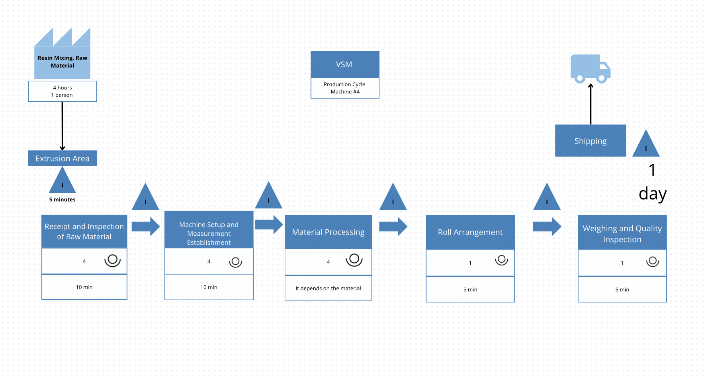
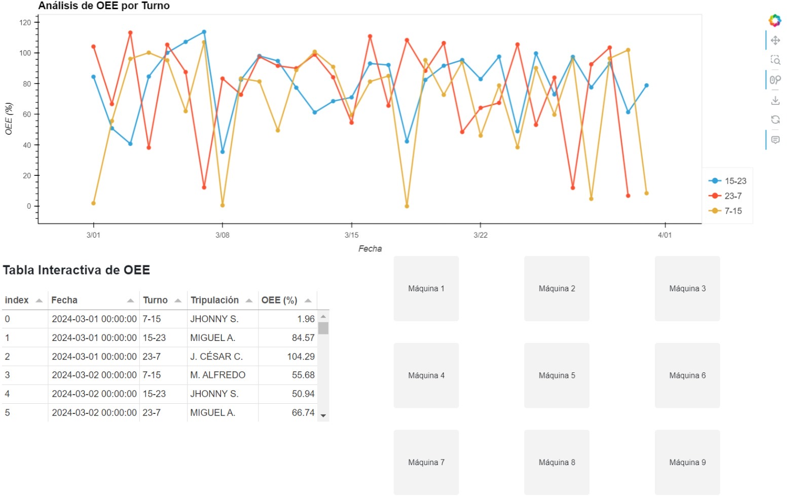
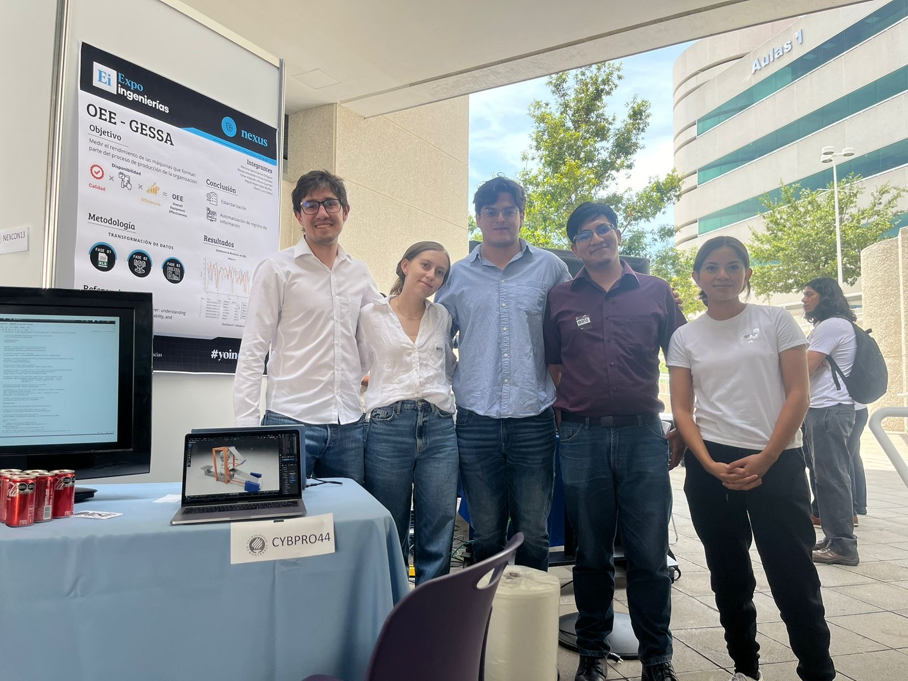

In this project, we collaborated with GESSA Salaverry, a company dedicated to manufacturing plastic film.
They were requesting a consultancy operational in the process area, retaking the continuous improvement philosophy we were evaluating were this practice could be acomplished.


We visited the plant several times to understand the processes and review the available data. We also interviewed operators and managers to better understand their needs and expectations.
As a result, we identified several bottleneck situations where raw material was not being used efficiently.

The image above shows a Value Stream Mapping (VSM) representation of the company’s processes, which allowed us to pinpoint the location of the main bottleneck. We also identified other areas for improvement, such as data collection. In some machines, operational data was not being recorded, which limited the accuracy of the Overall Equipment Effectiveness (OEE) analysis.
Once we had identified the multiple improvement areas, we started working with the advances.
First we needed to recollect the most possible operational machine data, the limitation we presented here was that the available information was registered in a notebook and it may seem "dumb" but the handwritting it was registered was not legible.
We wanted to automatize the process of registering operational data, with the purpose to reduce the human error, and having a visual tool to analyze the Operational Efficiency of the machines.
After transferring the handwriting information to digital we started making some transformation to find any insights.
We also began to work with the dashboard to present how the information would see. The first part of our new system was automatizing the data from the machines, the second and adding value was the dashboard that had the ability to visualize macro and micro data.
Due to our strong performance, new opportunities arose. First, we had the chance to present the project at an Engineering Fair at Tecnológico de Monterrey campus Puebla, and the company gave us the opportunity to continue developing it throughout the summer.

As you can see that is an image of the dashboard we developed, it has the ability to visualize the OEE KPI, and also the possibility to see the data in a macro and micro way.
We also created a dashboard that allows the user to visualize the data in a more interactive way, with the ability to filter by machine, date, and other parameters.

Team Members: